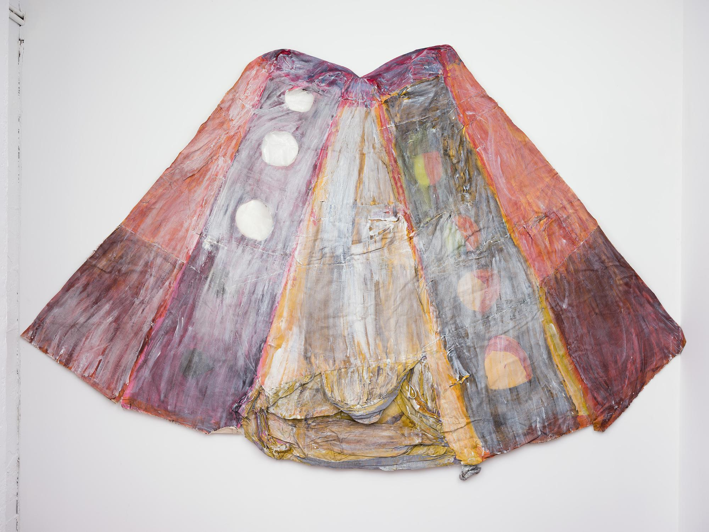
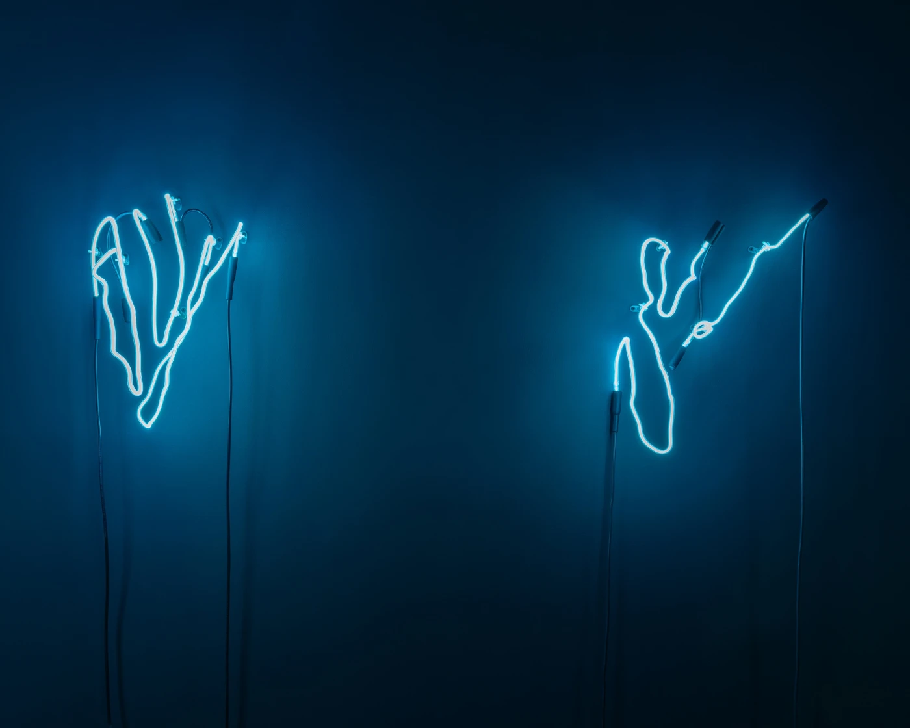

Image courtesy of artist
Miami Art Week descends this coming week in full force. Art Basel and Untitled both provide the opportunity to see some of the world's most talented artists. We highlight two artists here that come from galleries with outstanding curatorial programs.
Ada Friedman shows with Kendra Jayne Patrick Gallery at Art Basel. Friedman uses a variety of materials, including unique combinations of cotton jacket, mylar, and wax to create mixed-media paintings that investigate the abstract, myth, and "concurrent realities."

Yi Gallery presents work by multimedia artist Annesta Le at this year's Untitled. The artist's neon and canvas work often surrounds fluidity and dreams with influence coming from psychoanalyst Carl Jung.
Visit Art Basel to buy tickets
Learn more about Untitled Art Fair